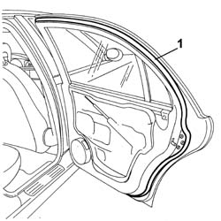

7010A42 Rear side door SEAL - R.R.
- Path
- Procedures > 70 FITTINGS > 7010 passenger compartment rear side doors > 7010A REAR SIDE DOORS ASSEMBLY > 7010A42 Rear side door SEAL - R.R.
- Kind
- repair procedure (removal / refitting; the operation number is the code)
- Applies to
- all engines; all production periods
- Interactive page
- https://sloeber94.github.io/elrnDB-lThss/en/#/110424
Applies to: all engines; all production periods
 Removing
Removing
 Refitting
Refitting- Disconnect the negative battery terminal.
See in Op. 7010M10 Rear door electric window control SWITCH - left or right - R.R.
See in Op. 7010E10 Rear side door INNER PANEL - R.R. or Replace
See in Op. 7010E42 Rear side door frame MOUDLING - R.R.
-
1. Release and remove the seal following the procedure described below.
- Use a bodywork drier which produces hot air at between 35 and 40°C.
- Point the air towards one of the two ends for 10-15 seconds from a distance of around 20-30 cm.
- Remove about 5-10 cm of the end avoiding rapid movements or angles that could cause breakages.
- Lift up the end removed previously and point the hot air between the adhesive and the paintwork from around 20-30 cm away for 15-20 seconds, then start pulling the seal towards you continuing to heat it using the drier to facilitate its removal and reduce the presence of any residues of adhesive or foam.

Applies to: all engines; all production periods
Refitting
Removing- Clean the door surround using paper soaked in heptane starting from the top centre line of the door working downwards in a clockwise direction and from the top centre line working downwards in an anti-clockwise direction until the door surround is completed.
- Check that the new seal is intact and not torn.
- Position the new seal taking care to stick the adhesive bead to the door frame.
See in Op. 7010E42 Rear side door frame MOUDLING - R.R.
See in Op. 7010E10 Rear side door INNER PANEL - R.R. or Replace
See in Op. 7010M10 Rear door electric window control SWITCH - left or right - R.R.
- Connect the negative battery terminal.